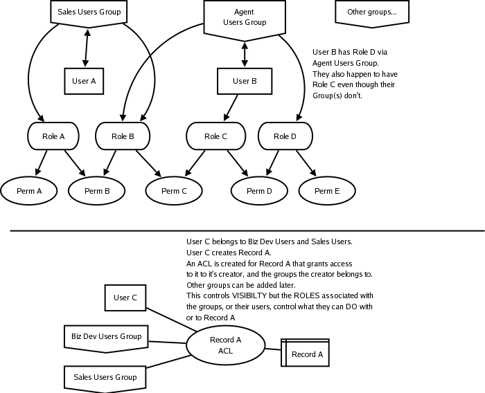

acl_plus_rbac
This doc contains:
Current status
Please note that this Rails plugin was written in 2006. It has not been tested with
the latest versions of Rails, but was fully functional when last released.
Concept:
Authorization vs. Authentication
Authentication
lets you determine that a user is who they claim to be. The most common
usage is used to determine if a user can even log in to a
system. Authorization
controls what that user can do once it's been determined that the user
is even allowed in. acl_plus_rbac is authentication system agnostic.
Use it with acts_as_authenticated or any other authentication system.
It doesn't care. You just need to add a few lines to the User class of
your favorite authentication system to connect it to groups, roles, and
permissions.
BIG PRINT FOR THE SKIMMERS:
THIS
WILL NOT AUTHENTICATE USERS OR CONTROL A USER'S ABILITY TO LOG IN IN
ANY WAY.*
* However, because there's no point in authorization without
authentication this plugin assumes you will be using an
authentication system and requires a pre-existing User
class. Our recommendation is that you install an
authentication system like
acts_as_authenticated
before installing acl_plus_rbac.
acl_plus_rbac will enable you to control what records users can access
and what forms of interaction they can have with those records.

Role
Based Access Control
Role Based Access Control (wikipedia
article) is a great tool but it
is based on the idea that you're limiting access to
types of things or actions not individual things. Imagine you have a
system with lots of company records in it. Some people can edit them,
some people can just view them, some people can't see them at all. But
there's no good way to mark one of those company records as being
visible/editable to a specified group of people if you're just using
RBAC.
A Role is equivalent to a job function. Each Role has associated
permissions. A newspaper has Roles like:
- Editor in Chief (can edit,
approve, or reject anything)
- Sports Editor (can edit,
approve, or reject anything in the sports section)
- Writer (can only write new
articles and edit articles they wrote)
The Sports Editor may also have the Role of Writer which would mean
that they get to write new articles and approve them if they're for the
sports section.
Access
Control Lists
Access Control Lists (wikipedia
article) are great at limiting
visibility of individual items to individuals or groups
but are fairly restricted in their ability to control what specific
people do with / to an item they have permission to see. In the *nix
world it can only control your ability to read, write, and / or execute
something. If you apply this to something like a company record there's
no way to indicate that a person who can see the company can't edit the
company name but can edit the phone number unless every single
component of that company is a separate record with separate ACLs. This
could lead to a LOT of database calls.
WHAT
THIS PLUGIN DOES
acl_plus_rbac combines the ideas of ACL an RBAC in the
following way:
- Any record in your system can
have an associated ACL
- Each ACL is used to grant
access to that record to one user and any number of groups. The user is
usually
the records creator.
- If the creator, or a member
of one of the groups indicated by the ACL, or one of their sub-groups,
tries to access an object you can then use the RBAC system to determine
what they can do with it.
- Groups of users can have
sub-groups and parent groups.
- Groups of users can have
roles associated with them.
- Users can have roles
associated with them.
- Roles can have any number of
permissions associated with them.
- You can query a UserGroup to
see if its roles grant a specific permission.
- You can query a User to see
if they have a specific permission granted to them through any
of their Roles or any of the Roles associated with any of the Groups
they belong to or any of their Groups parent Groups.
- You can query a Role to see
if it grants a specific permission.
The best way to use a system like this is to create ACL records for
container objects. For example: A company is really a container for
many other records like phone numbers, addresses, notes, files, contact
people, etc. When someone requests access to a company record pull up
it's ACL and see if that user is the creator or a member of one of the
approved groups. If not you can just give them a permission denied
message. If they are you can first use the RBAC system to determine
which types of containing objects they have permission to view. If they
can't see notes then you don't need to bother to load them in the
controller. In the view you can then determine if you should render an
edit button for the notes or a delete button for the files. In most
systems there's no need to test every single associated object to see
if the user can see it. If they can see the company record they can
usually either see all of the notes or none of the notes.
Installation
/ Setup:
* Requires a pre-existing User class. Consider installing
acts_as_authenticated
before installing acl_plus_rbac.
(see http://wiki.rubyonrails.org/rails/pages/Acts_as_authenticated)
Just install the Plugin like any other.
To install:
script/plugin install svn://rubyforge.org//var/svn/acl-plus-rbac/acl_plus_rbac
Or to use svn externals:
script/plugin install -x svn://rubyforge.org//var/svn/acl-plus-rbac/acl_plus_rbac
Then from the command line run
./script/generate acl_plus_rbac_migration
That will generate a new database migration file and a series of
fixtures
for unit testing. Then bring your database up to speed with
If you're interested in running the unit tests you can run
to copy the test fixtures into your fixtures directory.
./script/generate acl_plus_rbac_fixtures
rake db:migrate
Add the following to your User class
include AclPlusRbacUser
has_and_belongs_to_many :roles, :join_table=>'user_roles'
has_and_belongs_to_many :user_groups, :join_table=>'user_groups_users'
WARNING: acl_plus_rbac assumes that the class that represents your
users is named User.
If anyone is interested in writing a generator that can customize
this on install I'd be more than happy to include it.
If you would like any of your models to automatically create a new
AccessControlList when they are created just add the following
within your model:
include AutoAclCreation # defines after_create
This will define an after_create method that creates a new AccessControlList that is associated with the
new object and the current user. No groups will be associated with it.
You can always implement your own after_create method instead and
associate UserGroup(s) with it at the same time.
Usage:
Once you have some Users set up the first thing you have to do
is set up some Roles and some Permissions. UserGroups are optional.
Every Permission object has a name and an access_name. The name is an
easily readable description of the permission that you'll display to
users. The access_name is what
you'll use in your code to refer to the permission. For example: "Can
manage User accounts" might be the name for the "manage_user_accounts"
permission.
Roles have a name and a description. Both are used to explain to end
users what the Role does. For example: you might have a Role with the
name "Accounts Manager" and the description "Accounts Managers can
create, modify, and delete any customer account in our system".
My recommendation is that you just build up these Roles and Permissions
as you need them and add them to a test fixture as you do. While this does
make testing easier it's not why I say it. Frequently you'll need to
reference the list of permissions as you code sa that you know the
correct access_name to use when checking if someone can do something
and it's far easier to read your fixtures YAML than it is to go query
the database.
We'll stick with the company record example while demonstrating usage
here.
Checking roles and permissions:
An acl method has been added to ActiveRecord::Base so now you can
take any standard Rails model and say:
my_acl_var = some_company.acl
to retrieve the associated AccessControlList. If there isn't one it
will just return nil which can be interpreted as meaning
"This particular object isn't restricted to any specific
person or group."
If that's all you want to know you can also use the following to get a
true / false indication of if it's protected. The acl object will be
cached during this check so if it is
restricted you won't have to make another database call to get it.
some_company.access_restricted?
When you know that an ACL object will be returned or you've
already checked that .access_restricted? is true
you can say:
some_company.acl.has_access?(some_user)
and it will return true if they are allowed to access this object. Of
course that
syntax will blow up if some_company.acl is nil so only use it when
you're working with
a record type that ALWAYS has ACLs or you've already checked
.access_restricted?.
You can also retrieve the ACL for an object without first loading the
object.
If you knew the object you wanted to check had a class of Company and
an id
of 4 you would say:
company_fours_acl =
AccessControlList.find_acl('Company', 4)
From the class name and the id it will find the appropriate ACL, if one
exists, or return nil. This is useful if you won't display anything
about the protected record if the current user doesn't have
access because it will save you from having to load it from the
database.
Regardless of how it is retreived, if your company_fours_acl is nil
or some_company.access_restricted? has returned false
you
know
there are no user
or group specific restrictions on this object. You may want to check
RBAC permissions related
to Companies or you may just want to display it.
If it IS restricted to a
specific
user and / or groups of users and
you need to see if the the current user is allowed to access it.
if (company_fours_acl.has_access?(some_user))
#they're allowed to access this but your business logic
# may dictate that you check whatpermissions the current user
# has in relation to this object.
else
#Access Denied!
#give them the boot
end
What if you have a record, that's limited to certain groups, and only
some of those groups have a permission you're interested in. For
example: Imagine our Company can be viewed by a handful of groups, but
only a couple of those groups have the ability to manage notes about
that Company. We'll call give that permisson the access name of
manage_notes.
company = Company.find(some_id)
if company.access_restricted?
if (p_acl.has_access?(current_user))
note_manager_groups = UserGroup.subset_with_permission(p_acl.user_groups, 'manage_notes')
if (current_user.member_of_groups?(noteable_groups))
# let them manage the notes
else
# tell them they aren't allowed
end
end
end
You may also want to check if the current user is the owner of an object
or if an objects owner is the current user. The following tests will see
if the user in question corresponds to the user referred to by the company's
AccessControlList. If there is no AccessControlList assoctiated with the
company or it doesn't reference a specific user it will return false.
current_user.owner_of?(company)
# or...
company.owned_by?(current_user)
Setting roles and permissions
The first question in your mind is probably "How do I assign a permission to
my user". Well, you don't. Not directly at least. Permissions are tied exclusively
to roles. A User can have many Roles or belong to many UserGroups, which in
turn have Roles, and each of those Roles can have many Permissions.
The reason behind this is that unless you're working in a system with very simple
business rules then permissions need context to be really useful.
[If you ARE working in a system with really simple business rules
then acl_plus_rbac is probably overkill.]
Note: You're going to want a UserGroup that contains everyone. There
are some base permissions in almost every app that are applicable to all
users. Create a UserGroup for everyone and a Role for those base permissions.
Tie them together and make sure every new user gets added to the UserGroup.
# Normally the everyone group, base permissions role, and base permissions
# would be inserted into the database (through whatever means you prefer)
# when the system is installed, but for the sake of demonstration
# we'll set these up here.
everyone_group = UserGroup.new()
everyone_group.name='everyone'
everyone_group.save()
base_permissions_role = Role.new()
base_permissions_role.access_name='base_role'
base_permissions_role.name='Base Permissions for Everyone'
base_permissions_role.description='Refers the permissions that all users have'
base_permissions_role.save()
foo_permission = Permission.new()
foo_permission.name='Foo!'
foo_permission.access_name='foo_perm'
foo_permission.save()
base_permissions_role << foo_permission
everyone_group << base_permissions_role
everyone_group.users << some_user_instance
So, the first thing to do is either associate your User with one of your system's
default roles or the UserGroup for everyone. That should get you the base
permissions that everyone should have. If you need a new permission
that isn't one of your apps defaults then just associate it with the
appropriate role or group that the user belongs to.
Assigning a role to a user: Because a User can inherit roles via the
UserGroups they belong to you don't want to just say
my_user << some_role #NO! BAD!
my_user.assign_role(some_role) #mmm mmm good.
UserGroups: UserGroups can contain other UserGroups. For example your "managers"
group would usually be a sub-group of your "everyone" group.
If you assign a user to the "managers" group they are then
associated with it's parent group "everyone". It's ok, but unnecessary
to also tie your user to the "everyone" group directly.
When you ask a user object if they have a Permission or a
Role it will traverse the heirarchy of groups and sub-groups
that they belong to and check all the Roles or Permissions
along the way.
The members of a UserGroup can be accessed in two ways:
my_user_group.users #just the users directly associated with this group.
my_user_group.all_users #the users directly associated with this group AND ALL of it's sub-groups.
#deleting Users from UserGroups
my_user_group.users.delete(some_user) # deletes them from this user group but not any of it's sub-groups.
my_user_group.remove_user_completely(some_user) # deletes the user from this group and any of it's
# sub-groups the user may belong to.
A useful tool in Unix based ACL systems is chown. It reassigns ownership of a
record from one user to another. An example of how this might be useful in a
Rails app is when a user leaves a company and all of their records need to be
reassigned to another user. Because AccessControlList objects are almost always
associated with a specific user (usually to indicate them as the creator or owner
of the record whose access is being controlled) we simply need to replace the
current user_id with that of the new user. You can obviously do this for a
specific record by just changing that value in the ACL object but you can also
change it for ALL records belonging to the original user or all objects of a
specific type that belong to them.
#The method signature:
#AccessControlList.chown(original_user_id, new_user_id, object_class_name = nil)
#To change all records say
AccessControlList.chown(original_user_id, new_user_id)
#To change all Company records just say
AccessControlList.chown(original_user_id, new_user_id, "Company")
License:
acl_plus_rbac is an extension of
Mitchel Hashimoto's RBAC plugin.
It is distributed under the MIT license.
The remaining portions of Mitchel's code are Copyright (c) 2006
Mitchell Hashimoto.
(xmitchx at google dot com)
Everything else is Copyright(c) 2006 Kay Rhodes
(masukomi at masukomi dot org)
Permission is hereby granted, free of charge, to any person obtaining a
copy of this software and associated documentation files (the
"Software"),
to deal in the Software without restriction, including without
limitation
the rights to use, copy, modify, merge, publish, distribute,
sublicense,
and/or sell copies of the Software, and to permit persons to whom the
Software
is furnished to do so, subject to the following conditions:
The above copyright notice and this permission notice shall be included
in
all copies or substantial portions of the Software.
THE SOFTWARE IS PROVIDED "AS IS", WITHOUT WARRANTY OF ANY KIND, EXPRESS
OR
IMPLIED, INCLUDING BUT NOT LIMITED TO THE WARRANTIES OF
MERCHANTABILITY,
FITNESS FOR A PARTICULAR PURPOSE AND NONINFRINGEMENT. IN NO EVENT SHALL
THE
AUTHORS OR COPYRIGHT HOLDERS BE LIABLE FOR ANY CLAIM, DAMAGES OR OTHER
LIABILITY,
WHETHER IN AN ACTION OF CONTRACT, TORT OR OTHERWISE, ARISING FROM, OUT
OF OR IN
CONNECTION WITH THE SOFTWARE OR THE USE OR OTHER DEALINGS IN THE
SOFTWARE.
Help
If you need help please e-mail Kay at masukomi at masukomi dot org.
If you have found a bug, or made an improvement, please do the same.